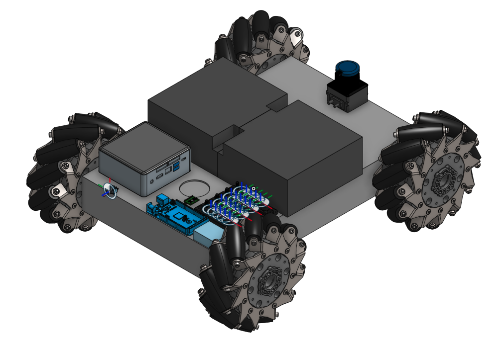
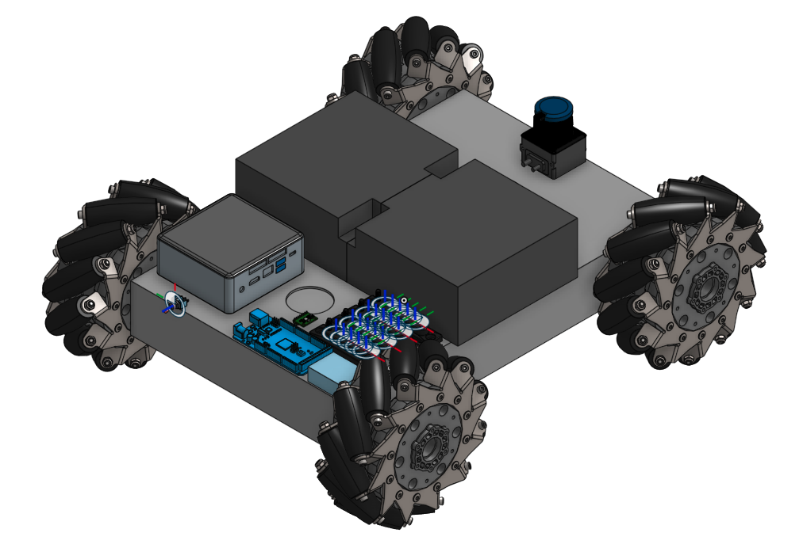
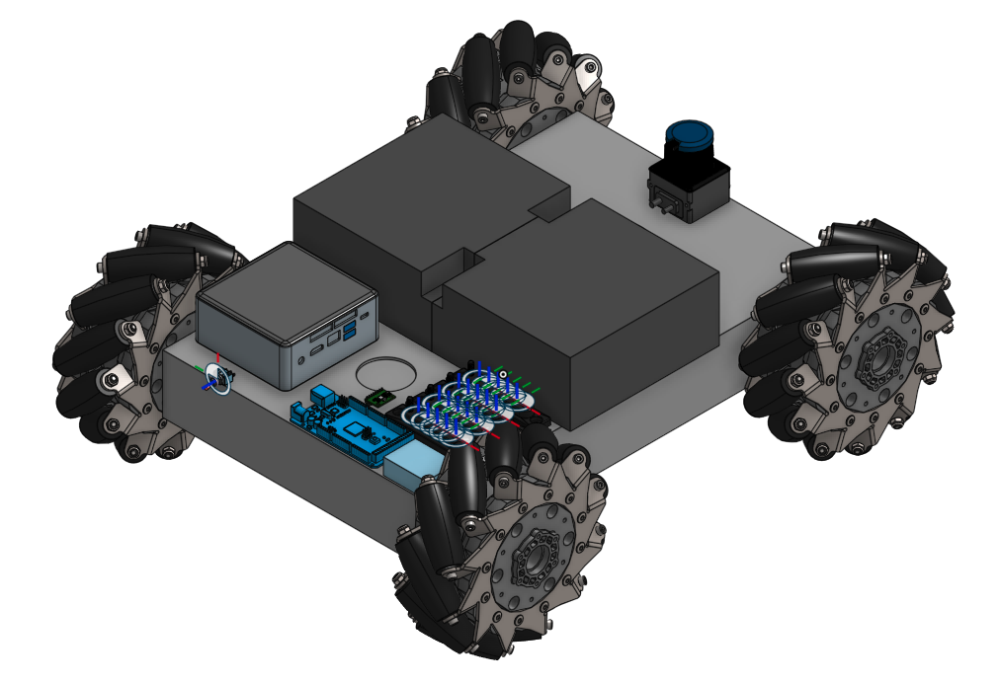

Figure 1: Original layout of components (left) & Suggested layout of components (right)
As explained on my Project page, this robot is a programmable mecanum wheel vectoring robot. This means that by commanding the wheels to go at different velocities, it can move forward and backwards and from side to side. Each wheel is rotated by a single 285 RPM motor via a chain/sprocket setup. In turn, each pair of motors are hooked up to a Sabertooth Dual 25A Motor Driver which can supply each motor with up to 25A and allows for Serial communication. The Sabertooths are then hooked up to two pairs of TX and RX pins on the Arduino Mega with a Kangaroo Motion Controller in between them to provide feedback control. To power the whole system, two 12V batteries are hooked up in series. On top of this 'mobile platform' (which also has a metal 'table top' with four legs that goes above the chassis), Matt will place an inverted Delta robot arm that he designed which will be used in future tests to manipulate a rigid object representing a scaled down airplane wing.
There were two main issues with the original structure and layout of the robot. In the left part of Figure 1, one can see that the Arduino Mega, a Hokuyo laser scanner, and an IMU are placed on the left side of the chassis top. Similarly, on the right side there are some busbars which allow the batteries and Sabertooth Drivers to be easily connected to one another. Unfortunately, the acrylic and wood pieces that the components are bolted to are not screwed onto the chassis and can easily fall off. Additionally, spacing between components is not optimized. Furthermore, in the original design, a laptop had to be placed on top of the table top (where the Delta arm would go) to control the Arduino.

Figure 1: Original layout of components (left) & Suggested layout of components (right)
In the redesign of the layout (right part of Figure 1), the batteries would lie across the middle of the chassis top (although not shown, this is how it lay in the original setup as well), dividing the 'Power & Control' section to the back of the robot and the 'Sensor' section to the front. In the 'Power & Control' section would be the Intel NUC (replaces the laptop), the Arduino Mega, DC/DC converters, and terminal blocks. In the 'Sensor' section would be any neccessary sensors useful for navigation (such as a laser scanner or camera). Besides for keeping all components withing the confines of the chassis area and replacing the laptop, this design also focuses the majority of any wiring to the back of the robot which gives a cleaner look.

Figure 2: Sprocket & Chain
The second problem was that the kit came with sprockets that could only be held in place on the axle using set screws (as shown in Figure 2). As a result, it was not uncommon that the set screws would loosen over time so that the sprocket would end up free spinning around a stationary axle. Fortunately, after doing some research, my teammate (Aamir Hussain) and I found that SuperDroid had updated their robot kit since last year to include keyed a shaft/sprocket setup which essentially eliminates this issue. Needless to say, we purchased the updated parts.